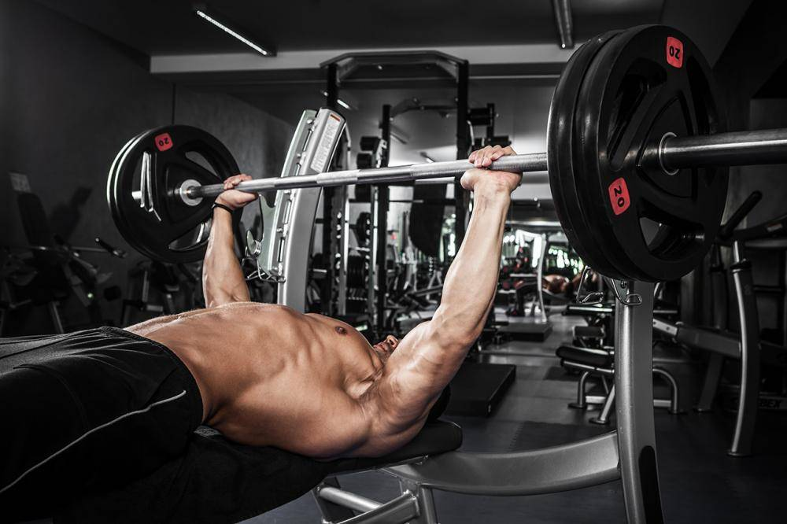

Присед
Выполняются с удержанием штанги на нижней части трапециевидных
мышц спины. Гриф штанги во время выполнения упражнения должен
лежать не на шее, а на верхней части спины. Расположение штанги
на верхней части трапециевидных мышц чревато болями в шее и
излишней нагрузкой на позвоночник. В отличие от варианта
удержания штанги на груди считается более продуктивным
упражнением, так как включает в работу больше мышц, и более
безопасным, особенно при работе с «тяжёлыми» весами.
Жим
Базовое физическое упражнение со свободным весом. Выполняющий
упражнение ложится на скамью, опускает гриф штанги до касания с
грудью и поднимает до полного выпрямления в локтевом суставе.
Является одной из трёх основных дисциплин в пауэрлифтинге
(наряду c приседанием и становой тягой), где используется
отличная от бодибилдинга техника — с целью жима максимально
большого веса штанги напрягаются трицепсы, передние пучки
дельтовидных мышц и широчайшая мышца спины, роль грудных мышц
значительно снижена.

Тяга
Многосуставное базовое упражнение, заключающееся в подъеме
штанги за счет ног и спины. Может использоваться как
самостоятельное упражнение в силовой тренировке, а также при
составлении программ тяжелой атлетики, пауэрлифтинга, кроссфита.